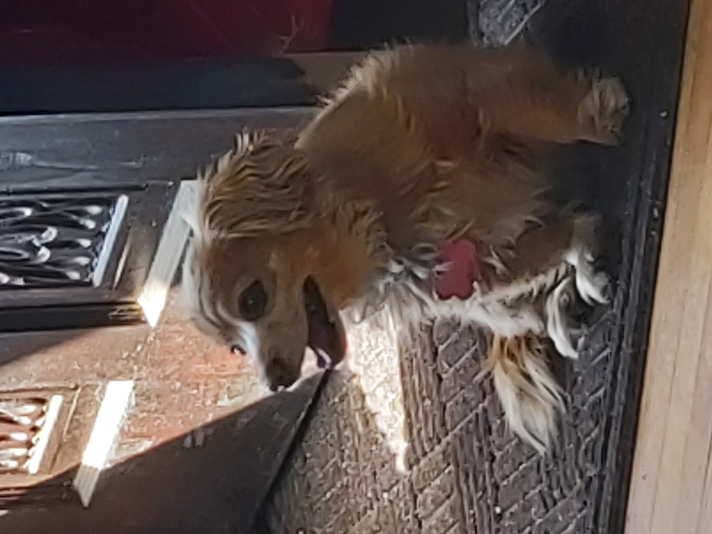
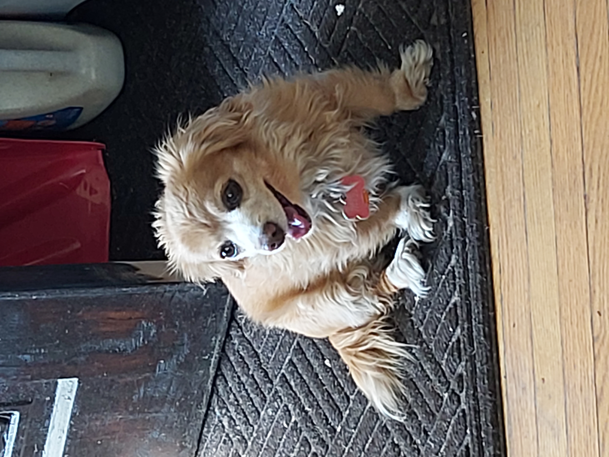

About Myself
I have a lot of training and experience in IT over a few years. I studied and graduated from the Computer Technology program at SAIT.
This program specialized in JAVA Programming, Database design (SQL), and website development.
Besides this SAIT program, I also studied for and passed both a CCNA and an A+ certification.
I have also have various IT and non-IT jobs in my career. Some of these include working in creating websites for a non-profit agency, Technical Support for various companies, working in a warehouse driving a forklift, and working with the Post Office.
Hobbies
I enjoy a lot of thinking / mental games. Often I will be found solving a crossword puzzle or Sudoku.
If I am with friends, I like to play Chess or Cribbage.
I have been known to play a good game of Darts - it has a lot of thinking and math involved.
More About Me...
I enjoy dogs, and I find smaller dogs are better. My little one can agree - if she could talk that is.
 |
 |  |  |
 |
I also play curling, and am an official licensed curling instructor. Its harder than it looks, believe me. I enjoy it as it is a thinking game, and anyone can play.
You don't have to be tall, or very strong to play it.